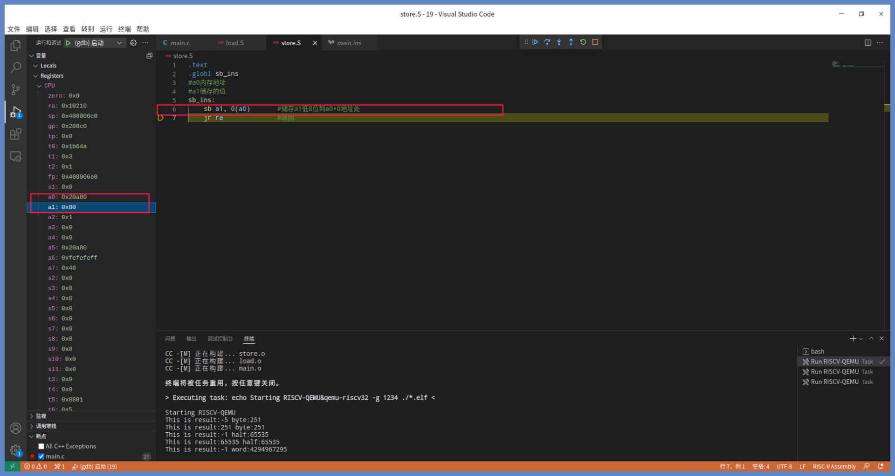
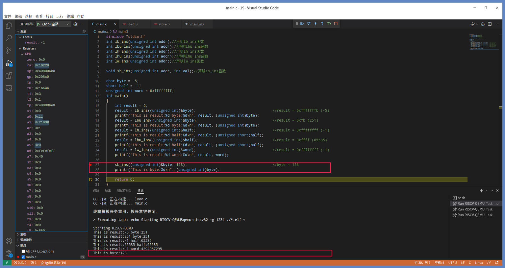
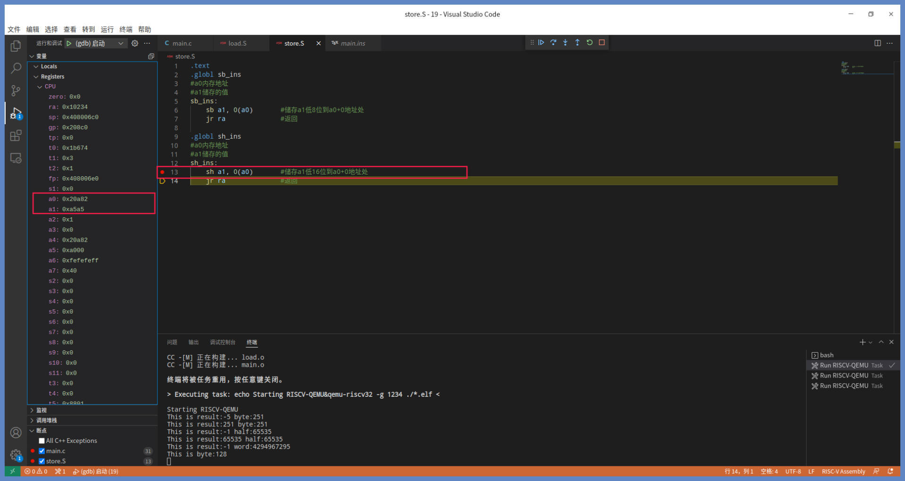
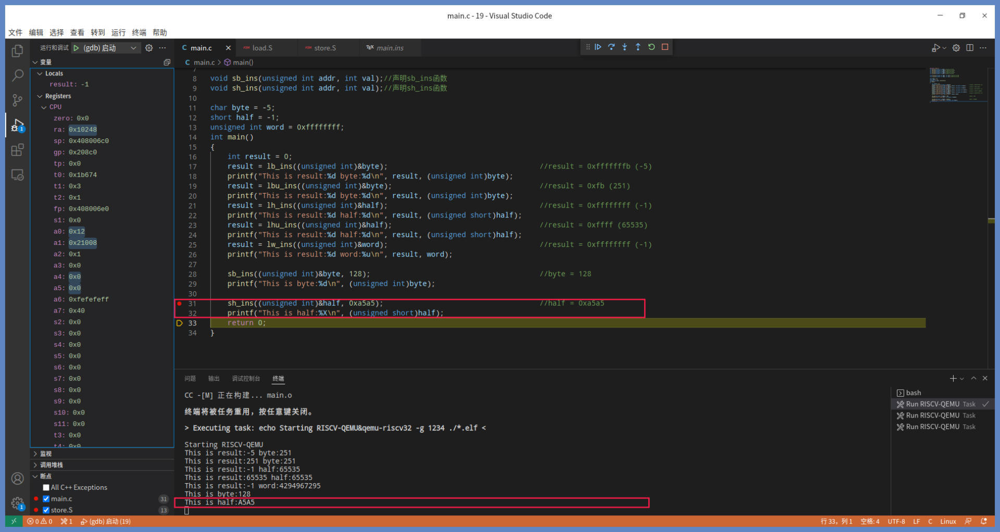
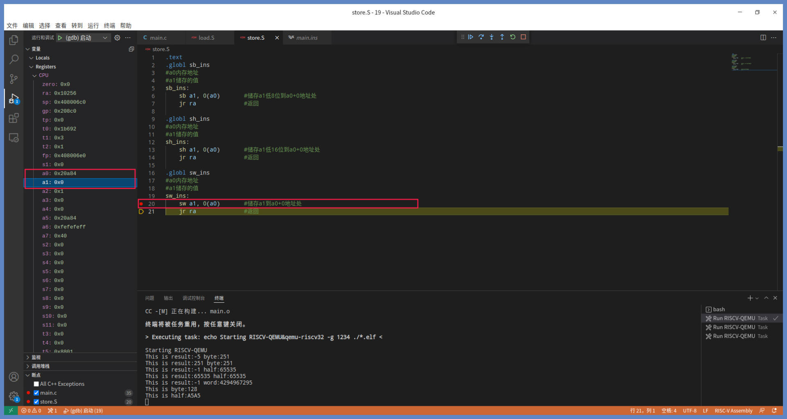
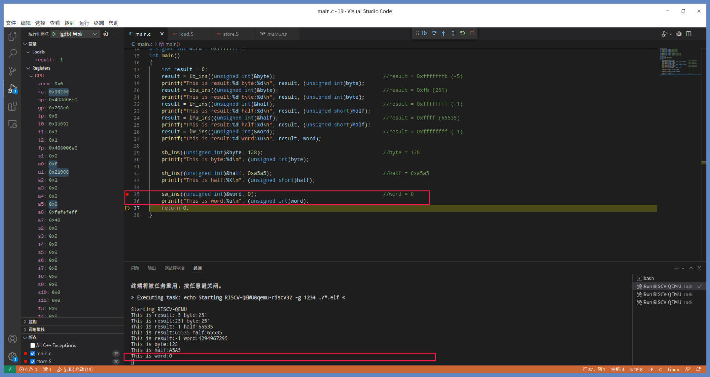
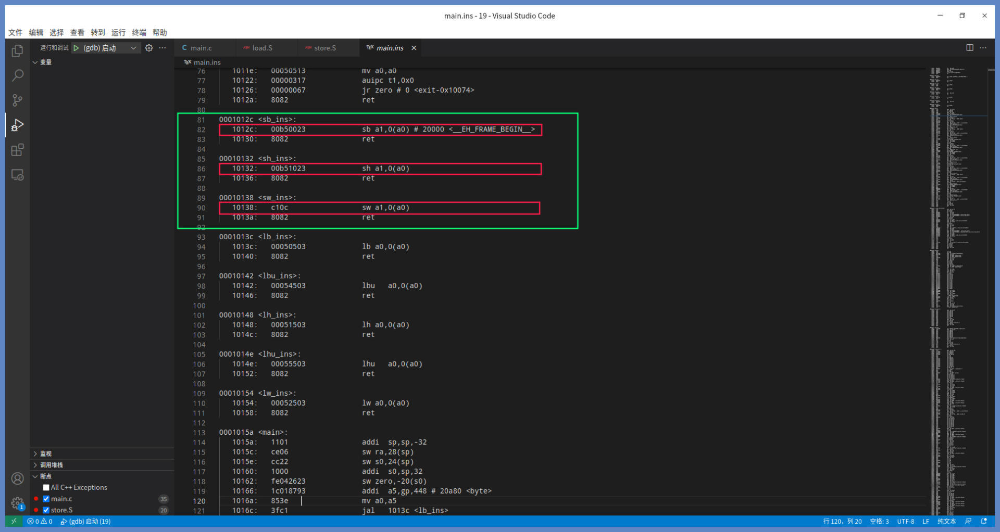
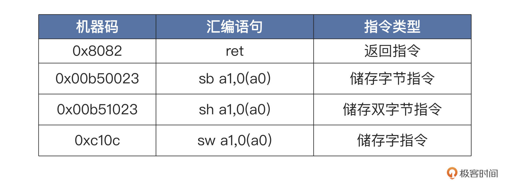
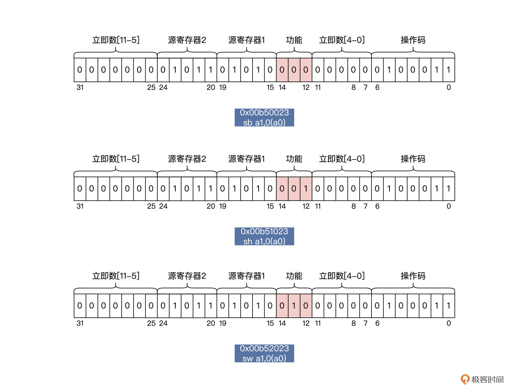
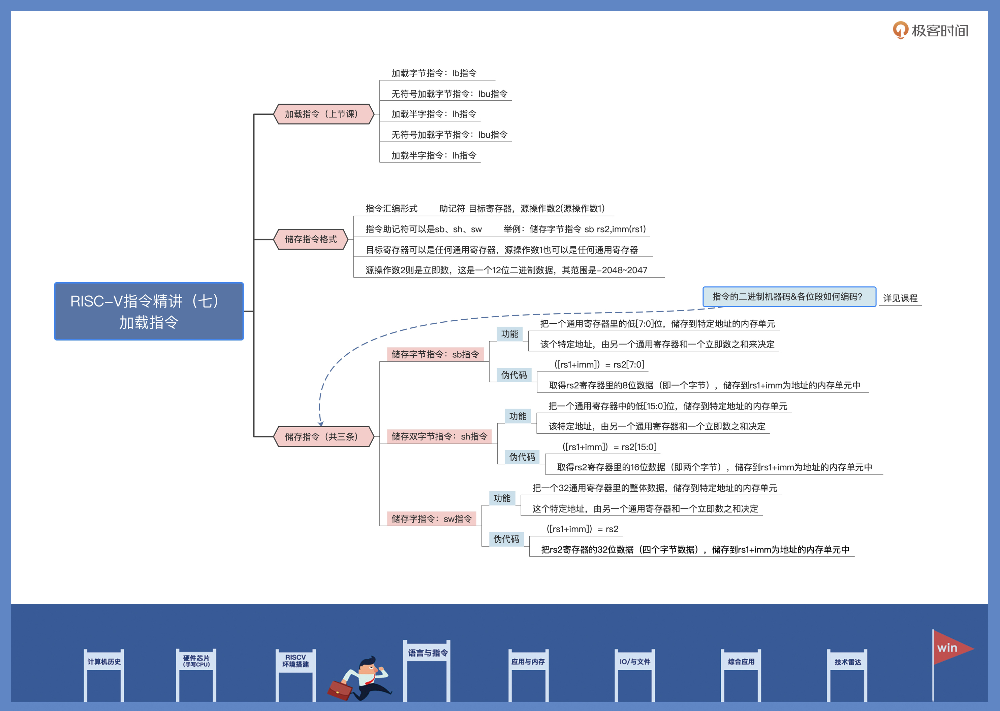

- 00 开篇词 练好基本功，优秀工程师成长第一步.md.html
- 01 CISC & RISC：从何而来，何至于此.md.html
- 02 RISC特性与发展：RISC-V凭什么成为“半导体行业的Linux”？.md.html
- 03 硬件语言筑基（一）：从硬件语言开启手写CPU之旅.md.html
- 04 硬件语言筑基（二）_ 代码是怎么生成具体电路的？.md.html
- 05 指令架构：RISC-V在CPU设计上到底有哪些优势？.md.html
- 06 手写CPU（一）：迷你CPU架构设计与取指令实现.md.html
- 07 手写CPU（二）：如何实现指令译码模块？.md.html
- 08 手写CPU（三）：如何实现指令执行模块？.md.html
- 09 手写CPU（四）：如何实现CPU流水线的访存阶段？.md.html
- 10 手写CPU（五）：CPU流水线的写回模块如何实现？.md.html
- 11 手写CPU（六）：如何让我们的CPU跑起来？.md.html
- 12 QEMU：支持RISC-V的QEMU如何构建？.md.html
- 13 小试牛刀：跑通RISC-V平台的Hello World程序.md.html
- 14 走进C语言：高级语言怎样抽象执行逻辑？.md.html
- 15 C与汇编：揭秘C语言编译器的“搬砖”日常.md.html
- 16 RISC-V指令精讲（一）：算术指令实现与调试.md.html
- 17 RISC-V指令精讲（二）：算术指令实现与调试.md.html
- 18 RISC-V指令精讲（三）：跳转指令实现与调试.md.html
- 19 RISC-V指令精讲（四）：跳转指令实现与调试.md.html
- 20 RISC-V指令精讲（五）：原子指令实现与调试.md.html
- 21 RISC-V指令精讲（六）：加载指令实现与调试.md.html
- 22 RISC-V指令精讲（七）：访存指令实现与调试.md.html
- 23 内存地址空间：程序中地址的三种产生方式.md.html
- 24 虚实结合：虚拟内存和物理内存.md.html
- 25 堆&栈：堆与栈的区别和应用.md.html
- 26 延迟分配：提高内存利用率的三种机制.md.html
- 27 应用内存管理：Linux的应用与内存管理.md.html
- 28 进程调度：应用为什么能并行执行？.md.html
- 29 应用间通信（一）：详解Linux进程IPC.md.html
- 30 应用间通信（二）：详解Linux进程IPC.md.html
- 31 外设通信：IO Cache与IO调度.md.html
- 32 IO管理：Linux如何管理多个外设？.md.html
- 33 lotop与lostat命令：聊聊命令背后的故事与工作原理.md.html
- 34 文件仓库：初识文件与文件系统.md.html
- 35 Linux文件系统（一）：Linux如何存放文件？.md.html
- 36 Linux文件系统（二）：Linux如何存放文件？.md.html
- 37 浏览器原理（一）：浏览器为什么要用多进程模型？.md.html
- 38 浏览器原理（二）：浏览器进程通信与网络渲染详解.md.html
- 39 源码解读：V8 执行 JS 代码的全过程.md.html
- 40 内功心法（一）：内核和后端通用的设计思想有哪些？.md.html
- 41 内功心法（二）：内核和后端通用的设计思想有哪些？.md.html
- 42 性能调优：性能调优工具eBPF和调优方法.md.html
- 先睹为快：迷你CPU项目效果演示.md.html
- 加餐01 云计算基础：自己动手搭建一款IAAS虚拟化平台.md.html
- 加餐02 学习攻略（一）：大数据&云计算，究竟怎么学？.md.html
- 加餐03 学习攻略（二）：大数据&云计算，究竟怎么学？.md.html
- 加餐04 谈谈容器云与和CaaS平台.md.html
- 加餐05 分布式微服务与智能SaaS.md.html
- 国庆策划01 知识挑战赛：检验一下学习成果吧！.md.html
- 国庆策划02 来自课代表的学习锦囊.md.html
- 国庆策划03 揭秘代码优化操作和栈保护机制.md.html
- 温故知新 思考题参考答案（一）.md.html
- 用户故事 我是怎样学习Verilog的？.md.html
- 结束语 心若有所向往，何惧道阻且长.md.html
- 捐赠
22 RISC-V指令精讲（七）：访存指令实现与调试
你好，我是LMOS。
上节课我们说了RISC-V是加载储存体系结构的典型，只有加载指令和储存指令才有资格访问内存。
计算机运算完成的结果，一开始会放在寄存器中，但最终归宿还是内存，此时就需要存储指令发挥作用了。这节课我们就来看看RISC-V提供的存储指令，一共有三条，分别是储存字节指令、储存双字节指令和储存字指令。
课程的代码你可以从这里下载。话不多说，咱们进入正题。
储存字节指令：sb指令
我们先从储存字节指令，即sb指令学起。
这个指令存储的字节单位是一个字节，也就是8位数据。说得再具体一些，这个指令会把一个通用寄存器里的低[7:0]位，储存到特定地址的内存单元里。而这个特定地址，要由另一个通用寄存器和一个立即数之和来决定。
储存字节指令的汇编代码，书写形式如下所示：
sb rs2,imm(rs1)
#sb 储存字节指令
#rs2 源寄存器2
#rs1 源寄存器1
#imm 立即数（-2048~2047）
上述代码中rs1和rs2可以是任何通用寄存器。立即数imm为12位二进制数据，其范围是-2048~2047。因为rs1、rs2以及立即数imm的规定，对后面的sh指令和sw指令同样适用，后面我就不重复说了。
sb指令完成的操作用伪代码描述是这样的：
（[rs1+imm]）= rs2[7:0]
我来为你解释一下伪代码执行的操作。首先取得rs2寄存器第0位到第7位这8位数据，即一个字节。然后，把这个字节数据储存到rs1+imm为地址的内存单元中。
接着是代码验证环节，为了方便调试，我们在工程目录下新建一个store.S文件，并在其中用汇编写上sb_ins函数。代码如下所示：
.text
.globl sb_ins
#a0内存地址
#a1储存的值
sb_ins:
sb a1, 0(a0) #储存a1低8位到a0+0地址处
jr ra #返回
sb_ins函数我已经帮你写好了，只有两条指令，第一条指令把a1寄存器的低8位数据，储存到a0+0地址处的内存单元中，第二条指令就返回了。
现在，我们一起用VSCode打开工程目录，把断点打在“sb a1, 0(a0) ”指令处，按下“F5”键调试一下，效果如下图：

图片里对应的是刚刚执行完sb a1，0(a0)指令之后，执行jr ra指令之前的状态。这时候a0寄存器中的值是0x20a80，这是byte变量的地址，a1是0x80，正是十进制数据128。
我们继续单步调试，返回到main函数中执行printf函数，打印一下byte变量的值，如下图所示：

从图中可以看到，byte变量的初始值为-5。调用sb_ins函数时，我们把byte的地址强制为无符号整数传给sb_ins函数第一个参数，把整数128传给sb_ins函数第二个参数。
C语言调用规范告诉我们，sb_ins函数会通过a0、a1寄存器传递第一个、第二个参数，之后printf函数输出byte变量的值为128，这证明了sb指令是正常工作的。
储存双字节指令：sh指令
接下来要说的是储存半字指令，也是储存双字节指令。它可以把一个通用寄存器中的低[15:0]位，一共16位的数据（即两个字节），储存到特定地址的内存单元中，这个地址由另一个通用寄存器与一个立即数之和决定。
储存半字指令的汇编代码，书写形式是这样的：
sh rs2,imm(rs1)
#sh 储存半字指令
#rs2 源寄存器2
#rs1 源寄存器1
#imm 立即数（-2048~2047）
sh指令完成的操作用伪代码描述如下所示：
（[rs1+imm]）= rs2[15:0]
我来为你解释一下，上面的伪代码执行了怎样的操作。首先取得rs2的第0位到第15位的数据。然后把这两个字节（16位数据）的数据，储存到rs1+imm这个地址的内存单元中。
好，咱们写个代码来验证一下。在store.S文件中，用汇编写上sh_ins函数。代码如下所示：
.globl sh_ins
#a0内存地址
#a1储存的值
sh_ins:
sh a1, 0(a0) #储存a1低16位到a0+0地址处
jr ra #返回
与sb_ins函数一样，sh_ins函数只有两条指令，但第一条指令是把a1寄存器的低16位数据，储存到a0+0地址处的内存单元中，第二条指令同样是返回指令。
现在我们一起用VSCode打开工程目录，在“sh a1, 0(a0) ”指令处打上断点，按“F5”键调试的截图如下所示：

图片对应的是刚刚执行完sh a1,0(a0)指令之后，执行jr ra指令之前的状态，a0寄存器中的值是half变量的地址，a1寄存器中的值是0xa5a5。
我们继续进行单步调试，返回到main函数中执行printf函数，打印一下half变量的值。

如上图所示，half变量的初始值为-1。随后调用sh_ins函数，我们把half的地址强制为无符号整数传给sh_ins函数第一个参数，再把整数0xa5a5传给sh_ins函数第二个参数，之后printf函数输出half变量的值为0xa5a5。这证明了sh指令工作正常。
储存字指令：sw指令
最后，我们来学习一下储存字指令，就是储存32位四字节指令，也是最常用的储存指令，它是把一个32位的通用寄存器，储存到特定地址的内存单元中，这个地址由另一个通用寄存器与一个立即数之和决定。
储存字指令的汇编代码书写形式如下所示：
sw rs2,imm(rs1)
#sw 储存字指令
#rs2 源寄存器2
#rs1 源寄存器1
#imm 立即数（-2048~2047）
上述代码中rs1和rs2可以是任何通用寄存器。立即数imm为12位二进制数据，其范围是-2048~2047。
然后我们看看sw指令完成的操作，对应的伪代码描述如下：
（[rs1+imm]）= rs2
这段伪代码执行的操作就是把rs2的32位数据，即四个字节数据，储存到rs1+imm为地址的内存单元中。
下面我们一起写代码验证一下，在store.S文件中，用汇编写上sw_ins函数。代码如下：
.globl sw_ins
#a0内存地址
#a1储存的值
sw_ins:
sw a1, 0(a0) #储存a1到a0+0地址处
jr ra #返回
sw_ins函数只有两条指令，第一条指令是把a1寄存器储存到a0+0地址处的内存单元中，第二条指令同样是返回指令。
毕竟眼见为实，咱们调试观察一下。用VSCode打开工程目录，在“sw a1, 0(a0) ”指令处打上断点，按下“F5”键调试，如下所示：

上图是刚刚执行完sw a1,0(a0)指令之后，执行jr ra指令之前的状态。a0寄存器中的值是word变量的地址，a1寄存器中的值是0，执行完这个sw_ins函数后，word变量的值应该变为0了。
我们继续单步调试，执行返回到main函数中执行printf函数，打印一下word变量的值，如下图所示：

可以看到图中word变量的初始值为0xfffffffff，随后调用sw_ins函数，我们把word变量的地址强制为无符号整数传给sw_ins函数第一个参数，把整数0传给sw_ins函数第二个参数，之后printf函数输出word变量的值确实为0。这证明了sw指令工作正常。
我们已经对sb、sh、sw指令进行了调试，了解了它们的功能，现在我们继续一起看看sb_ins、sh_ins、sw_ins函数的二进制数据。
打开终端，切换到该工程目录下，输入命令：riscv64-unknown-elf-objdump -d ./main.elf > ./main.ins，就会得到main.elf的反汇编数据文件main.ins，我们打开这个文件，就会看到上述这些函数的二进制数据，如下所示：

可以看到，在图片里的反汇编代码中不但有伪指令，还有两个字节的压缩指令。编译器为了节约内存，所以会把指令压缩。比如说ret的机器码是0x8082，sw a1,0(a0)机器码是0xc10c，它们只占用16位编码，即二字节。
截图里五条加载指令的机器码与指令的对应关系，你可以参考后面这张表格。

我画了示意图，帮你拆分一下sb、sh、sw指令各位段的数据，这样更容易看清楚它们是如何编码的。如下所示：

对照上图可以看到，sb、sh、sw指令的功能码都不一样，借此就能区分它们。而这些储存指令的操作码都相同，立即数也相同（都是0），这和我们编写的代码有关。
我还想提示你注意一下sw指令，图片里的情况跟反汇编出来的数据可能不一致，原因是编译器使用了压缩指令。图片里我还原的是sw a1,0(a0)正常的编码。
你可以手动在sw_ins函数中，插入0x00b52023这个数据进行验证。怎么插入这个数据使之变成一条指令呢？参考[上节课]还原lw指令的讲解，我相信你这次自己也能搞定它。
关于RISC-V的三条储存指令已经介绍完了，它们可以将字节、双字节、四字节储存到内存中去。实现了保存运算指令运算结果的功能，给高级语言实现各种类型的变量，提供了基础。
重点回顾
今天我们一口气学完了三条储存指令。有了三条储存指令，加上我们上节课学过的五条加载指令，就构成了RISC-V的访存指令。
RISC-V提供的储存字节指令、储存半字指令和储存字指令。储存指令可以把寄存器的运算结果，或者其他数据储存到特定的内存空间中。储存单位可以是一个字节、两个字节，或者四个字节。有了这些指令，不同大小、位宽的数据处理起来都很方便。
运算指令的运算结果，要通过储存指令保存到内存中，这也给高级语言实现各种类型的变量，打下了基础。
我照例用导图梳理了这节课的要点，你可以做个参考。

思考题
为什么三条储存指令，不需要处理数据符号问题呢？
期待你在留言区跟我互动，也可以记录一下自己的收获。如果觉得课程还不错，也别忘了分享给更多朋友。
© 2019 - 2023 Liangliang Lee. Powered by gin and hexo-theme-book.